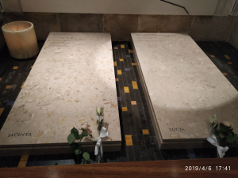

Esta web esta dedicada a varios pueblos de Portugal que me han hecho muy feliz
En especial a las personas que con su esfuerzo y sabiduria han cabalgado las holas más grandes del mundo en sus tablas de surf.
Siempre que he estado en fatima, me he sentido mejor de salud, la primera vez pase de 3.5 diotrias a 1.5 diotrias, despues de varios meses volvieron las 3.5 diotrias.
Puerta de entrada al faro de Nazaré

Lapidas de Jacinta y LuciaPlaya sur de Nazaré